一、准备工作：
1、首先确保你的群晖NAS已经安装并启用了Docker套件（在DSM 7.2及以上版本中称为Container Manager）。如果你还没有安装，可以在DSM的套件中心搜索Container Manager安装。安装完成后，打开，确认服务运行正常。此外，还需要开通SSH访问权限，因为后续的配置操作主要通过命令行完成，图形界面无法完成所有配置。开启SSH的方法是：登录DSM→控制面板→终端机和SNMP→勾选“启用SSH功能”→设置端口号（默认22）→应用。
2、在开始安装之前，你需要提前准备好以下内容，这些是Hermes Agent正常运行的必要条件。首先，你需要一个大语言模型服务商的API Key，例如OpenAI、DeepSeek、智谱、月之暗面等。如果你计划使用飞书、钉钉等消息平台接入，还需要提前创建好相应的机器人并获取Webhook URL或App ID/Secret。这些凭据在初始化配置时会被要求填写，提前准备可以避免中途停顿。
| LLM API Key | ||
| AppID + AppSecret | ||
| AppKey + AppSecret | ||
| GitHub账号 | github.com注册 |
3、登录群辉控制面板先启动SSH功能并指定好22端口，如下图。
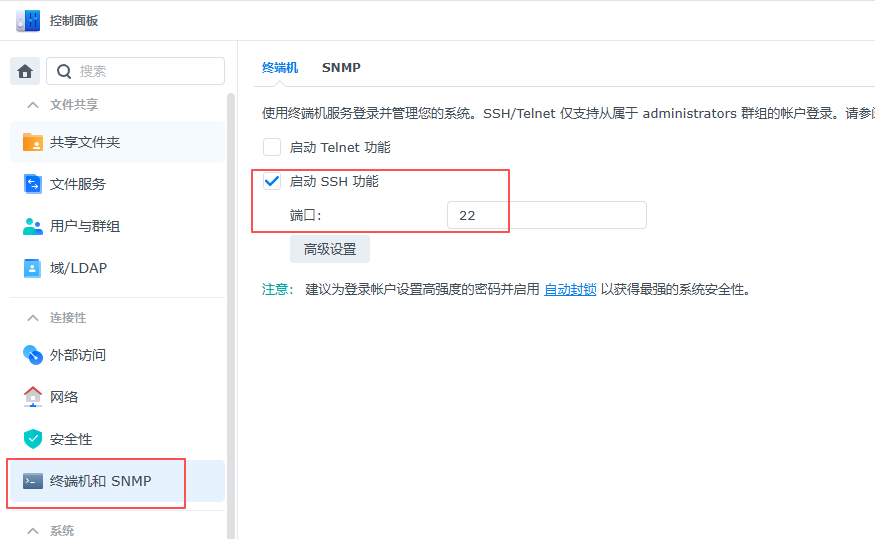
4、这样才能通过SSH命令在群晖NAS的文件系统中创建专用目录来存储Hermes Agent的所有数据，包括配置文件、API密钥、会话记录、技能插件和记忆数据等。这个目录将被挂载到Docker容器内部，确保数据持久化，即使容器被删除或重建，数据也不会丢失。建议将目录创建在NAS的共享文件夹下，方便后续管理和备份。
二、配置NAS系统：
1、SSH登录群晖NAS：在windows界面用组合键WIN+R打开运行，输入CMD进入命令行，然后按下面的命令通过SSH进入群晖。使用管理员账号连接。输入后需要输入密码，密码是不可见的，直接输入后回车即可。
ssh 你的用户名@<你的NAS IP地址> -p 22#例如我的用户名和IP组合就是：ssh an1812@192.168.110.222 -p 22
2、用命令创建Hermes数据目录：使用/volume1/docker/hermes路径，其中/volume1是群晖的第一个存储池挂载点。或者直接在前端图形界面docker中新建hermes文件夹。（注意，尽量通过命令建立，因为通过sudo权限建立的是root权限的文件夹，如果在图形界面你不是root权限新建后即便导入了文件也可能因为权限不对而无法启动）
sudo mkdir -p /volume1/docker/hermes同时也要建立以下4个工作目录文件夹。
sudo mkdir -p /volume1/docker/hermes/datasudo mkdir -p /volume1/docker/hermes/homesudo mkdir -p /volume1/docker/hermes/srcsudo mkdir -p /volume1/docker/hermes/workspace
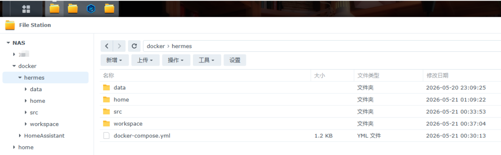
3、编写docker-compose.yml配置文件，关键。
能不能稳定运行其实就看这个配置文件怎么写，Docker Compose是管理Hermes Agent容器的最佳方式，它将所有配置集中在一个YAML文件中，方便一键启动、停止和升级。以下是推荐的docker-compose.yml配置，包含了所有必要的参数设置和数据持久化挂载。请在/volume1/docker/hermes目录下创建该文件。把下面的代码复制到一个空的文本文件中，并把文件连同扩展名修改为docker-compose.yml，再拉拽到群晖的图形文件夹hermes目录中即可。
version: '3.8'services:hermes-agent:image: nousresearch/hermes-agent:latestcontainer_name: hermes-agentvolumes:- /volume1/docker/hermes/home:/home/hermes- /volume1/docker/hermes/data:/opt/data- /volume1/docker/hermes/src:/home/hermeswebui/.hermes/hermes-agentenvironment:- HERMES_HOME=/home/hermes- GATEWAY_ALLOW_ALL_USERS=truerestart: unless-stopped#user: "10000:10000" 之前尝试过的方法不行给注释掉的#user: "1026:100"shm_size: '1gb'deploy:resources:limits:memory: 4096Mcommand: gateway runhermes-webui:image: ghcr.io/nesquena/hermes-webui:latestcontainer_name: hermes-webuidepends_on:- hermes-agentports:- "8787:8787"#user: "1026:100"volumes:- /volume1/docker/hermes/home:/home/hermeswebui/.hermes- /volume1/docker/hermes/src:/home/hermeswebui/.hermes/hermes-agent- /volume1/docker/hermes/workspace:/workspaceenvironment:- HERMES_WEBUI_HOST=0.0.0.0- HERMES_WEBUI_PORT=8787- HERMES_WEBUI_STATE_DIR=/home/hermeswebui/.hermes/webui-mvp#- WANTED_UID=1026#- WANTED_GID=100restart: unless-stopped
建立好文件后将文件直接拉取粘贴到hermes目录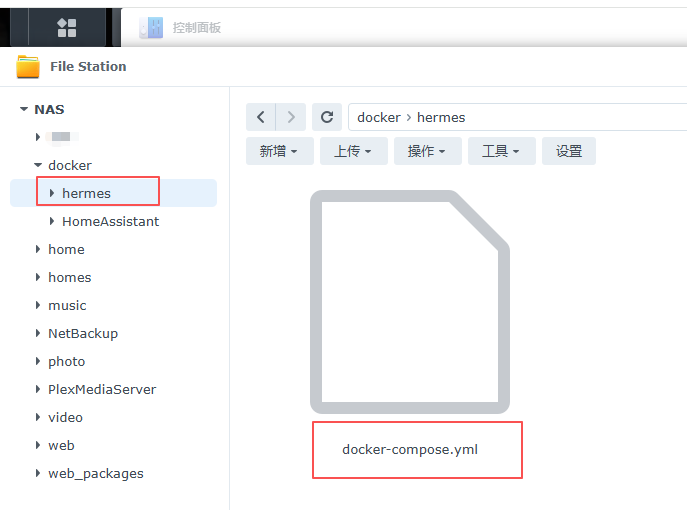
上述配置的关键参数说明如下：image指定了官方的Hermes Agent镜像，restart: unless-stopped确保容器在NAS重启后自动恢复运行，user: "1000:1000"限制容器以非root用户运行以提高安全性（这里我在安装的时候注释掉了，因为直接使用sudo命令安装，并且文件夹使用root授权是最稳妥的办法），ports将容器内的8642端口映射到宿主机的8642端口，这个端口我们不需要访问，我们需要访问的是8787网页端口。volumes将容器内的/opt/data目录挂载到宿主机的数据目录，这是数据持久化的核心。TZ环境变量设置时区为中国标准时间，HERMES_DATA_DIR指定容器内的数据存储路径。
tips： 如果你在国内环境下拉取镜像困难，可以配置Docker镜像加速源。在docker-compose.yml中添加registry-mirrors配置，或者使用国内镜像站点如dockerpull.org、docker.1ms.run等。也可以先在本地电脑拉取镜像后导出为tar文件，再传到NAS上导入。截止到5月末，用我文件里的地址源是可以顺利拉取的。
4、拉取镜像并启动容器：
步骤 1：进入配置文件所在目录。
cd /volume1/docker/hermes步骤 2：拉取Hermes Agent镜像。这个过程可能需要几分钟到十几分钟甚至几小时，取决于你的网络速度。
sudo docker compose pull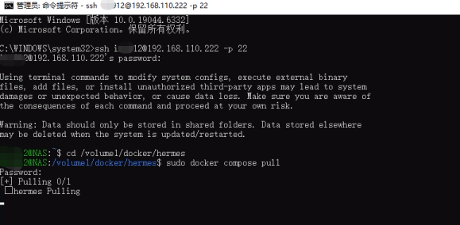
步骤 3：启动容器。使用以下命令启动Hermes Agent服务，并设置为后台运行模式。
sudo docker compose up -d#sudo docker compose down 后面这命令是对应上面的关闭命令，上面是开，下面这是关
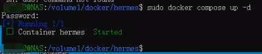
步骤 4：检查容器运行状态。确认容器已经正常启动并在运行。
sudo docker ps | grep hermes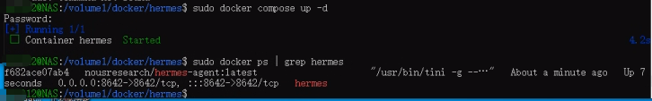
如果看到容器状态为“Up”，说明容器已经成功启动。如果容器状态为“Exited”或“Restarting”，说明启动失败，需要查看日志排查原因。查看日志的命令为：
sudo docker compose logs hermes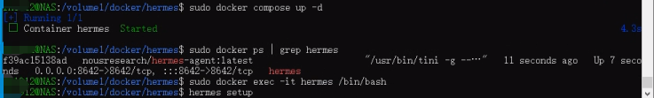
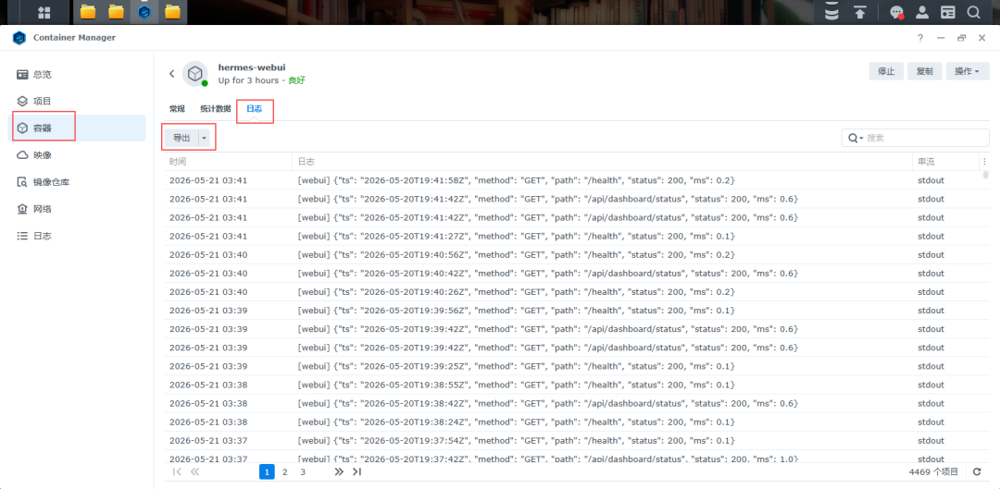
cd /volume1/docker/hermessudo docker compose up -d
http://192.168.100.222:8787/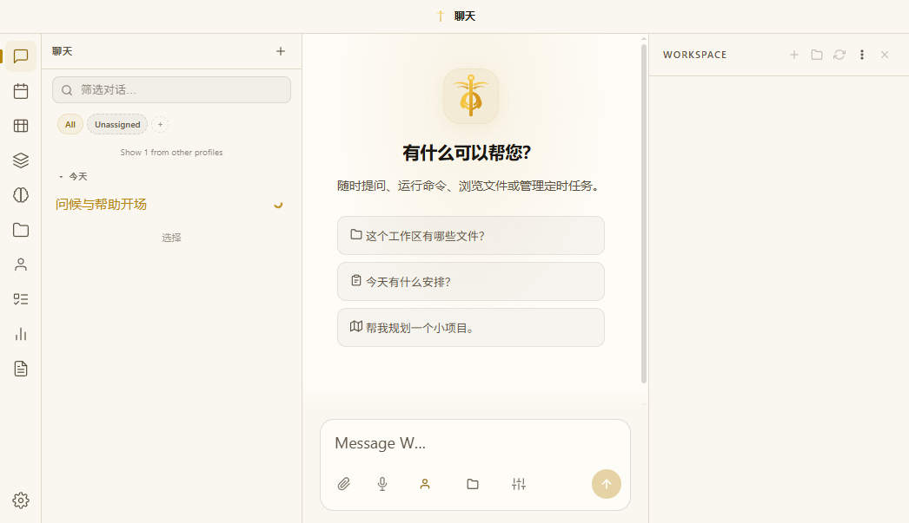
https://platform.deepseek.com/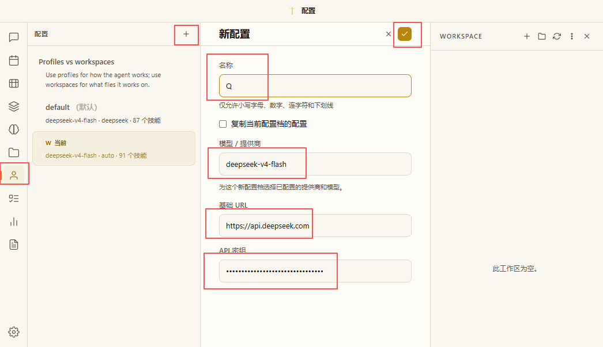
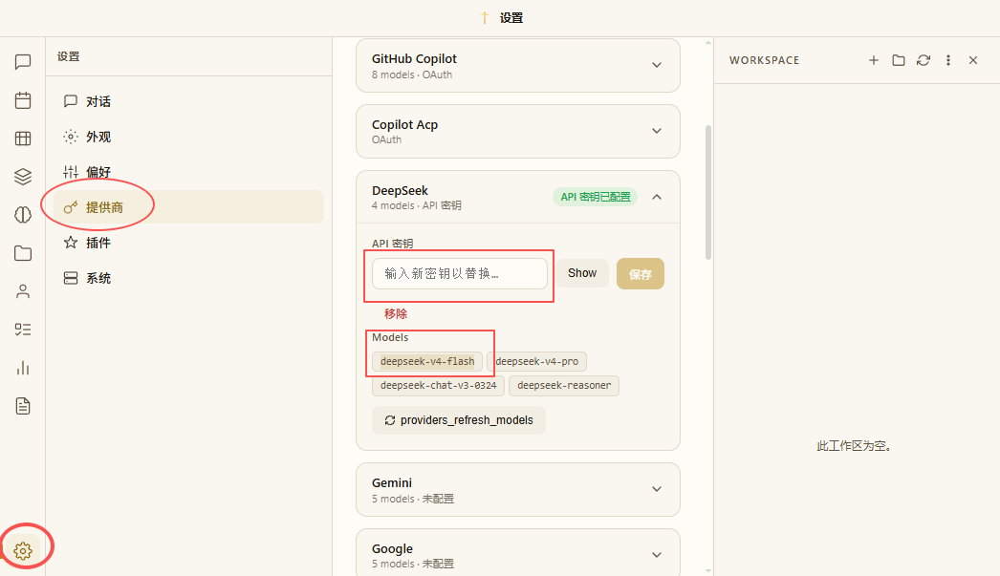
sh 你的用户名@<你的NAS IP地址> -p 22#例如我的用户名和IP组合就是：ssh an1812@192.168.110.222 -p 22
# 进入 hermes-agent 容器sudo docker exec -it hermes-agent bash# 激活虚拟环境source /opt/hermes/.venv/bin/activate# 现在可以运行 hermes 命令hermes setup
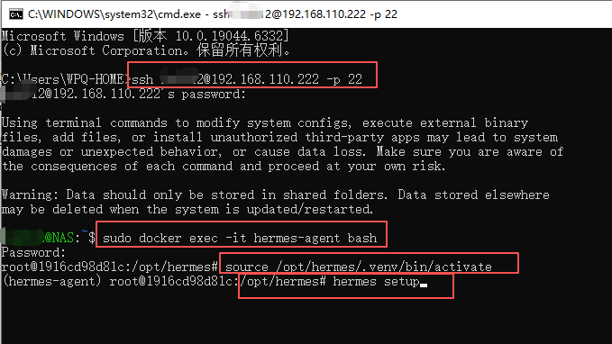
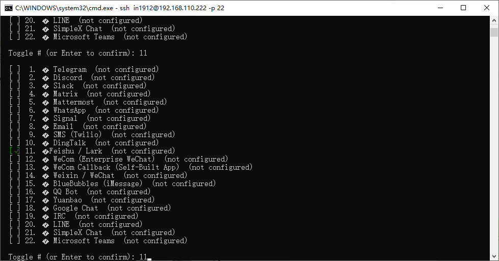
→ (●) Scan QR code to create a new bot automatically (recommended)(○) Enter existing App ID and App Secret manually
8、在hermes引导安装步骤中显示的扫码链接，你需要粘贴在浏览器中打开，如果你没有在飞书建立过机器人，会引导你创建一个机器人，按默认名称建立即可，如果你是企业用户又不是企业管理员，就需要企业管理员审核一下。
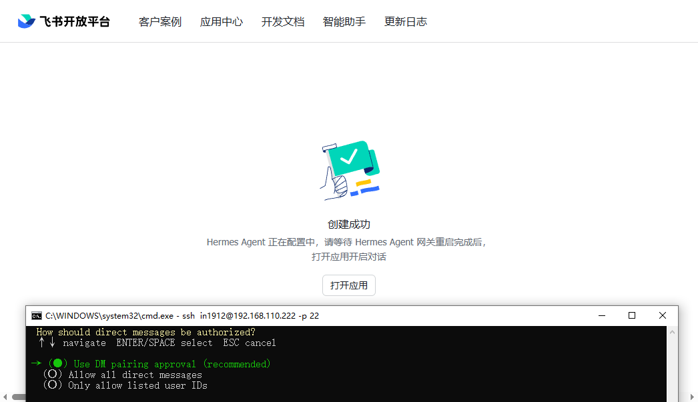
→ (●) Use DM pairing approval (recommended)(○) Allow all direct messages(○) Only allow listed user IDs
9、 然后选择第二个：允许所有直接消息
→ (●) Respond only when @mentioned in groups (recommended)(○) Disable group chats
10、选择第一个：可以被@提及到群组时进行回复
⚠ Open DM access enabled for Feishu / Lark.Skipped (keeping current)Skipped (keeping current)Group chats enabled (bot must be @mentioned).Home chat ID (optional, for cron/notifications):✓ Feishu / Lark configured!App ID: cli_axxxxxxxDomain: feishuBot: 泉哥的智能助手━━━━━━━━━━━━━━━━━━━━━━━━━━━━━━━━━━━━━━━━━━━━━━━━━━✓ Messaging platforms configured!Restart the gateway to pick up changes? [Y/n]:
11、询问重新启动网关以获取更改？[Y/n]:直接回车即可。
进入手机飞书客户端，随便输入内容，系统会回复配对码。
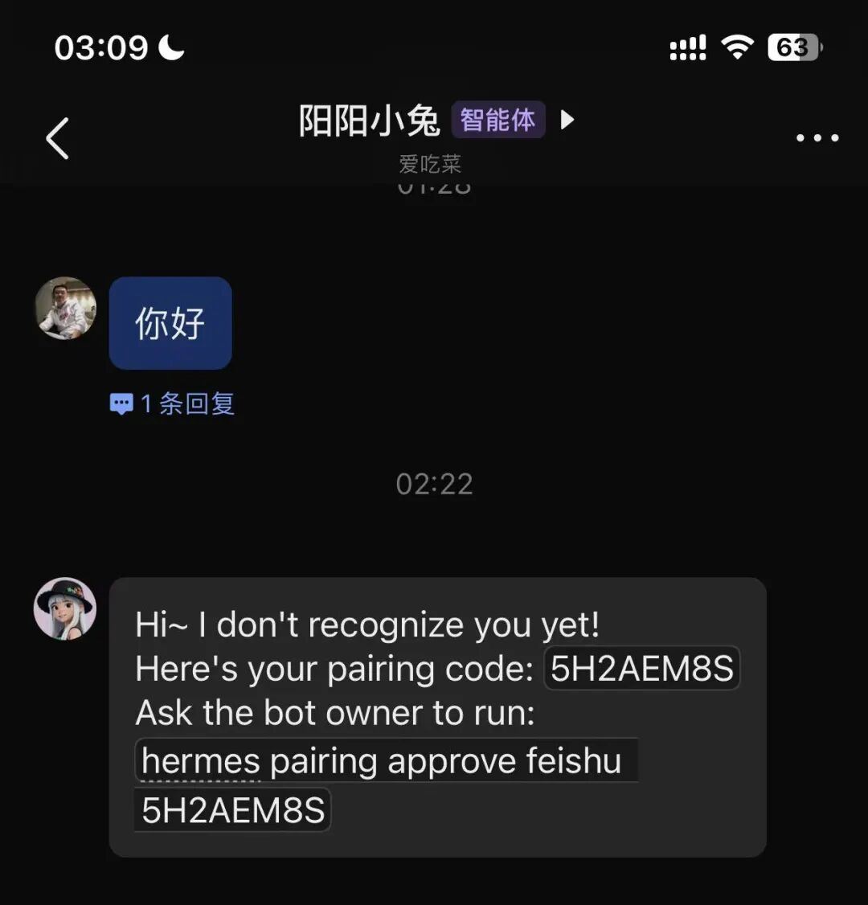
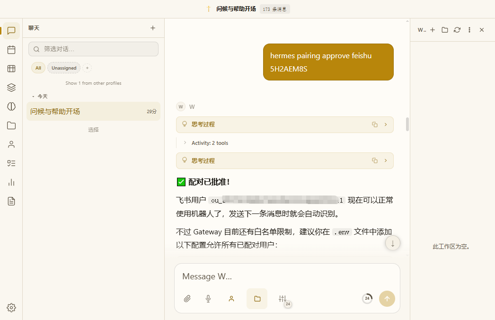
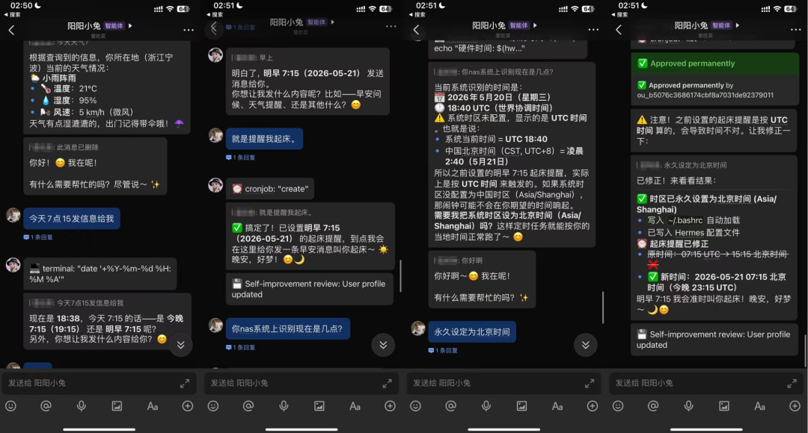
如果你觉得这篇文章有用，欢迎转发给朋友同事，大家一起做一做吧。
往期推荐
别用龙虾AI了，教你1毛钱接入 Hermes agent个人助理（五）